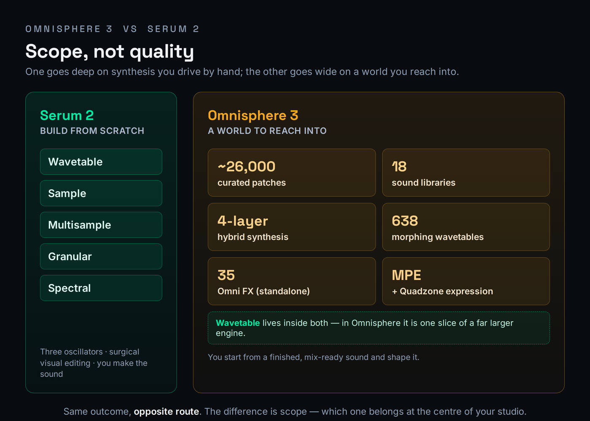
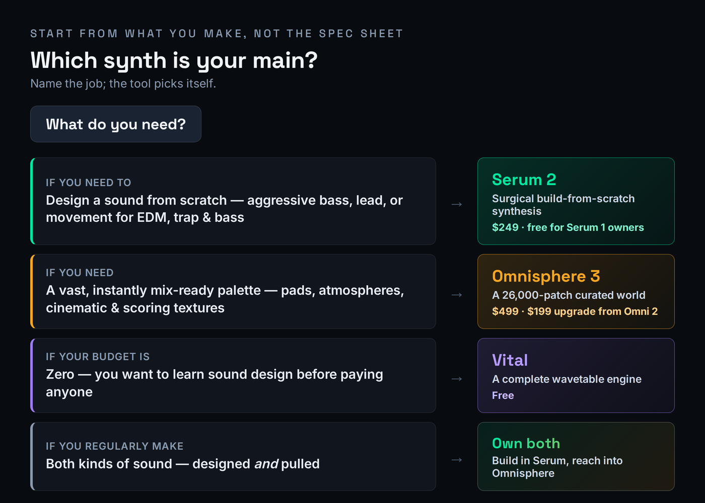
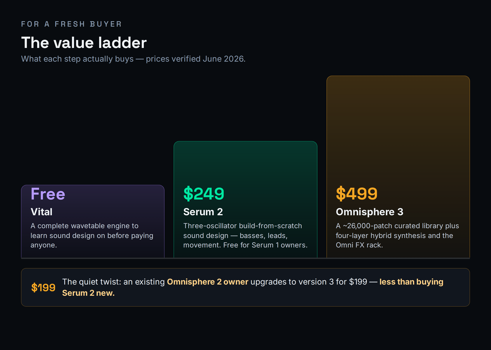

Search “Omnisphere vs Serum” and you will find the same two kinds of pages over and over: lesson channels selling a course, and affiliate farms still comparing Omnisphere 2 against Serum 1. Almost none of them say the one thing that ends the decision — these are not really competitors. They are different machines for different jobs. Serum 2 is a build-from-scratch sound-design synth: you start from a blank patch and design your own basses, leads, and movement with surgical, visual control. Omnisphere 3 is a vast curated sound universe: you reach into roughly 26,000 ready-made patches and a deep four-layer engine and shape a finished sound to taste. The real question is not “which is better.” It is “which one is your main instrument, given what you make — and is Omnisphere’s roughly double price worth the breadth for your music?” That is the question this page answers, honestly, with a per-use-case scorecard and a straight verdict on price.
Pick Serum 2 ($249, free for Serum 1 owners) if you design sounds from scratch — aggressive basses, leads, and movement for EDM, trap, and bass music. It does that job better and cheaper, and it is lighter on CPU. Pick Omnisphere 3 ($499, or a $199 upgrade) if you want a vast, instantly mix-ready palette of pads, atmospheres, and cinematic textures and one foundational instrument to build a sound world from. Most pros who can afford it own both and use each for the job it is built for. If budget forces one, buy for what you actually make most.
Two different machines: build-from-scratch vs a world of sound
The reason these two synths get cross-shopped is that both are described as “hybrid” and both can make rich, modern sounds. The reason they should never be treated as interchangeable is that they arrive at “rich and modern” from opposite directions — and that direction is what decides which one belongs at the center of your studio. Get the framing right and the whole decision becomes obvious; get it wrong and you will spend a lot of money on breadth you never touch, or stay frustrated that your library synth fights you every time you try to design something specific.
Serum 2 is a synthesizer you build patches in, from a blank slate. Released in 2025 and rebuilt from the original, version 2 now gives you three main oscillators (up from two), and each one can run as any of five modes: wavetable, sample, multisample, granular, or spectral. There is still a dedicated sub oscillator and a noise oscillator, so a single patch can layer up to five sound sources. The point of Serum has always been that the synthesis is right in front of you — you can see the waveform, draw the modulation, and watch exactly what every control does. That visual, surgical workflow is why it became the standard for designed-from-scratch sound. If you want the underlying concept, our Bible entry on wavetable synthesis explains the engine that sits at Serum’s heart, and the entry on subtractive synthesis covers the filtering you shape it with.
What is genuinely new in version 2 is that Serum stopped being wavetable-only. The granular oscillator breaks audio into as many as 256 simultaneous grains for evolving textures and pads; the spectral oscillator resynthesizes sound from its frequency content for timbres you cannot draw as a waveform; and the multisample mode loads playable sampled instruments. Underneath, the modulation grew up too: up to ten LFOs (with Chaos shapes built on Lorenz and Rössler attractors, plus sample-and-hold and drawable paths), four envelopes, eight macros, and a fully overhauled modulation matrix. There are now dual filters in series or parallel, a new graphical mixer for routing oscillators and effects, and thirteen effects across two FX busses, including a Bode frequency shifter and a convolution reverb. It is, in other words, a deeper builder than it was — but it is still a builder. You make the sound. For the granular side specifically, the Bible entry on granular synthesis is the grounding.

Omnisphere 3 is a hybrid workstation built around a colossal library, not a blank slate. Released on October 21, 2025 — the first paid Omnisphere in a decade — it runs on Spectrasonics’ STEAM engine and ships with 18 new sound libraries comprising roughly 26,000 patches, organized into themed folders so you can dial up “Club Land” or “Scoring Organic” instead of wading through everything. Each patch is built from up to four layers, and the engine folds 638 morphing DSP wavetables and 35 new analog-modeled filters into a sound architecture far broader than wavetable alone. The headline additions in version 3 are the Omni FX rack — 35 studio-quality effects that also run as a standalone plug-in — plus full MPE support, the Quadzone system for splitting and crossfading the four layers, a Global Controls macro layer, a Mutations feature that generates related variants of a patch, and a polyphonic dual-frequency shifter. It is also 100 percent backward compatible with Omnisphere 2 sessions. The whole design assumes you start from a finished, mix-ready sound and shape it — the opposite of Serum’s blank patch. Our full Omnisphere 3 review and Serum 2 review go deeper on each instrument alone.
That structural difference shows up in the sound itself, not just the workflow. Serum’s signal path is pure synthesis — oscillators, filters, and effects generating and shaping waveforms in real time — which gives it a clean, precise, unmistakably digital character that you can push into aggression or keep glassy. Omnisphere’s STEAM engine is built to stream a vast amount of recorded and processed source material: much of its library begins as sampled acoustic, electronic, and field-recorded sound that the engine then resynthesizes and layers. The practical upshot is that Omnisphere tends to sound organic and three-dimensional straight out of the box, with a depth that comes from real-world sources, while Serum tends to sound surgical and exact because you drew every part of it. Neither is “better” — but if you want a pad that feels like it was recorded in a real room, that is a library job, and if you want a bass with no character in it you did not put there yourself, that is a synthesis job.
This is why the comparison is so persistent and so misleading. Because both can now do granular textures and both touch wavetables, a quick demo makes them look like the same kind of tool. But a stack of Serum patches could never give you Omnisphere’s instant 26,000-sound palette or its layered cinematic beds, and Omnisphere’s library, deep as it is, will never give you the immediate, see-everything control of drawing a bass in Serum and modulating it ten ways before lunch. They answer different questions. Serum asks “what sound do you want to build?” Omnisphere asks “what world do you want to start from?” If you want a wider map of where each lands, our roundups of the best synth plugins and the best plugins for sound design place both among the field.
Which one for what you make
The fastest way to choose is to name what you produce and let the work pick the tool. If your music lives on designed sounds — a bass that growls in a way no preset does, a lead with movement you dialed in by hand, an effect built note by note — that is build-from-scratch territory, and it is Serum’s home. If your music leans on found sounds — an instant pad that already sits in the mix, an evolving atmosphere, a cinematic bed, a playable hybrid instrument — that is library territory, and it is Omnisphere’s home. The decision tree below is the same logic in one glance, including the case where both are true.

Walk the common cases. A designed bass or lead for EDM, trap, or bass music — something aggressive, precise, and yours — is the textbook Serum job. Its three oscillators, surgical wavetable editing, and clean output are built exactly for this, and it stays light enough on CPU that you can run several instances in a drum rack. Trying to do this in Omnisphere means hunting its library for something close and then bending it, which is slower and less exact than simply drawing what you want. For the genre-specific picture, our list of the best plugins for EDM leans heavily on tools that work the way Serum does.
Now the other column. An instant cinematic pad or evolving atmosphere is the textbook Omnisphere job. You audition a few patches from the Scoring or Ambient libraries, find one that already sits in the mix, and shape it with Global Controls in seconds — a result that would take real time to build from a blank Serum patch, if you could match it at all. Scoring to picture is the same story at scale: when you need twenty different evocative textures by Friday, Omnisphere’s 26,000-patch breadth is the whole point, and the four-layer engine lets you stack and morph them into something bespoke. And a pop or songwriting session that needs a foundational, mix-ready keyboard, pad, or hybrid bed leans Omnisphere too, because the fastest path to a good sound there is to start from a good sound.
One case sits on the fence and is worth handling carefully: an evolving texture or modern hybrid pad. Both can do it now. Serum 2’s granular and spectral oscillators will build one from scratch with total control over every grain and partial; Omnisphere will hand you a hundred of them already finished and let you mutate from there. If the texture needs to be exactly a certain way and nothing off-the-shelf is right, build it in Serum. If you want a great one now and will shape rather than design, pull it from Omnisphere. That is the whole comparison in miniature: same outcome, opposite route, and the right choice depends on whether you value control or speed on that particular sound. If layering is the move, our guide to layering synths applies to both.
The table below scores each synth per use case on a ten-point scale. These are not head-to-head “winner” numbers — each synth is rated on how well it solves that specific job, which is the only honest way to compare instruments built for different purposes. Every gap is defended in the prose around it, and the decimals are deliberate, not decoration.
| What you’re making | Serum 2 | Omnisphere 3 | Why the gap |
|---|---|---|---|
| Designed bass / lead from scratch | 9.4 | 7.2 | Surgical, visual, three-oscillator building is Serum’s purpose; Omnisphere bends a preset toward it. |
| Aggressive EDM / trap movement | 9.3 | 7.5 | Clean punchy output and deep per-parameter modulation; Omnisphere can, but it is not the fast path. |
| Instant cinematic pad | 7.0 | 9.5 | A finished, mix-ready pad in seconds from a 26,000-patch library; Serum builds it from a blank slate. |
| Evolving / hybrid texture | 8.4 | 9.0 | Serum’s granular and spectral modes are powerful; Omnisphere’s library plus four layers gets there faster. |
| Scoring to picture (breadth) | 6.8 | 9.6 | Twenty evocative textures by deadline is exactly what the curated library and layering are for. |
| CPU-light live / large template | 8.8 | 7.0 | Serum runs many instances comfortably; Omnisphere’s streaming and layers are heavier by design. |
Read the numbers as a map, not a ranking. Serum’s 9.4 on a designed bass and Omnisphere’s 9.6 on scoring breadth are not competing scores — they describe two different rooms. The closest the two come is the evolving-texture row, 8.4 to 9.0, because version 2’s granular and spectral engines finally let Serum into territory Omnisphere used to own outright; even there, Omnisphere edges ahead on sheer speed-to-result rather than on what is possible. Everywhere else the gap is wide because the synths are answering different questions, and the score simply records which question each is built to answer.
One axis the table cannot show is how you play the instrument, and for some producers it decides everything. Omnisphere 3 leans into expression and performance: full MPE support means a compatible controller can bend pitch, timbre, and pressure per note, the Quadzone system splits and crossfades its four layers across the keyboard so one patch can be a whole arrangement, and the Global Controls macro layer is designed to be mapped to hardware and tweaked live. That makes it a natural fit for keyboard players, scoring sessions where you record performances in real time, and anyone building expressive, evolving parts with their hands. Serum 2 is built for the opposite working style — programmed, drawn, and automated rather than performed — with its deep per-parameter modulation, drawable LFO paths, and visual envelopes rewarding producers who sculpt a sound by editing rather than by playing. If you think with a MIDI controller in your hands, that tilts toward Omnisphere; if you think with a mouse and a piano roll, that tilts toward Serum.
The verdict: best-for, not a winner
There is no single winner here, and any page that hands you one is selling something. The honest verdict is two verdicts — one per synth, each judged on the job it was built for. Buy by what you make most; if you make both kinds of sound regularly, that is your signal that you will eventually own both.
It helps to locate yourself in one of three rooms. If you are an electronic producer — EDM, trap, bass, hip-hop, anything where the hook is a sound you designed — Serum 2 is your main instrument and likely the only synth you strictly need; Omnisphere is a luxury you may add later for pads and texture. If you are a composer or media writer scoring to picture or producing ambient and cinematic work, Omnisphere 3 is the foundational buy because breadth and speed-to-a-usable-sound are the job, and Serum becomes the specialist you reach for when a scene needs a designed, aggressive element. If you are a songwriter-producer working in pop, R&B, or singer-songwriter material, you sit in the middle: Omnisphere’s instant, mix-ready keyboards and beds usually serve the song faster, but a single great Serum bass or lead can define a record, so many in this room end up with both and use each sparingly. Find your room first; the verdict below then reads itself.
Best for Designing sounds from scratch — aggressive basses, leads, movement, and effects for EDM, trap, and bass, with surgical visual control and low CPU.
Watch out It is a builder, not a library. There is no 26,000-patch world to pull from; you make the sound, which is slower when you just want a finished pad now.
Verdict The best build-from-scratch sound-design synth you can buy, and free if you already own Serum 1. For most electronic producers, this is the main instrument.
Best for A vast, instantly mix-ready palette — pads, atmospheres, cinematic and hybrid textures — and one foundational instrument to build a sound world from.
Watch out It is broad and heavy. It will not give you Serum’s draw-it-yourself precision, it costs roughly double, and it wants 16GB of RAM and 64GB of disk.
Verdict The deepest sound universe in software, and at $199 the upgrade from Omnisphere 2 is one of the easiest buys of the year. The foundational instrument for scoring, ambient, and pop.
Is Omnisphere worth roughly double Serum?
This is the question the SERP dodges, so let us answer it head-on. Serum 2 is $249. Omnisphere 3 is $499. That is roughly double — not the 2.5× you will see quoted on older pages, but close to exactly twice. The honest question is not “is Omnisphere twice as good,” because they do different jobs and that framing is meaningless. The honest question is: does the breadth you are paying $250 more for match what you actually make?

Here is what the extra $250 actually buys, stated plainly. It buys breadth and time: roughly 26,000 finished patches across 18 libraries, four-layer hybrid synthesis, the standalone Omni FX rack, and a sound design team’s decade of work you can audition in an afternoon. If you score to picture, write ambient, produce pop, or otherwise need a vast instantly usable palette and one deep instrument to anchor a session, that breadth pays for itself in the hours it saves and the sounds you would never have built yourself. The $250 is not a tax; it is the library.
And here is when it is not worth it. If you make aggressive electronic music and your sound is something you design — a custom bass, a screaming lead, a rhythmic effect — you will use a small fraction of Omnisphere’s library and spend your time in the synthesis engine, which is exactly where Serum is better and cheaper. Paying double for a library you barely open is the classic Omnisphere regret, and it is real. For that producer, the honest advice is to buy Serum 2, or if budget is the deciding factor this quarter, start with Vital — the base version is genuinely free, the synthesis engine is complete, and it covers wavetable sound design well enough to learn on before you pay anyone. There is no shame in starting free; our roundup of the best free VST plugins makes the case in full.
One practical cost the price comparison rarely mentions is the machine. Serum 2 is comparatively light and you can run many instances; its spectral and granular oscillators cost more than plain wavetables, but it scales well across a template. Omnisphere 3 is heavier by design — it streams a large library and runs four-layer patches, and Spectrasonics recommends 16GB of RAM or more and 64GB of free disk. On a loaded session, several Omnisphere instances add up far faster than several Serum instances, which is one quiet argument for treating Omnisphere as a featured instrument you reach for deliberately rather than something you drop on every channel.
There is also more than one way to pay, and the path changes the math. Serum 2 sells outright at $249, but Xfer also offers a Splice rent-to-own plan at $9.99 a month that completes ownership after twenty-five payments — a few dollars more in total, but it spreads the cost and you stop owing once you have paid it off, unlike a perpetual subscription. Omnisphere is sold only as an outright purchase through Spectrasonics’ dealers, with no rent-to-own and no subscription, so the $499 (or $199 upgrade) is a single commitment. It is worth being honest about opportunity cost too: the $250 gap between them is a serious sample library, a year of a sound subscription, or three or four focused effect plugins, and for a producer whose sound is built rather than pulled, that money often does more spent on tools that shape sound than on a second giant library. The right comparison is never just Serum versus Omnisphere — it is Omnisphere versus everything else $250 could buy for the music you make.
Where they sit: Vital, Pigments, and the rest
Serum and Omnisphere are not the only synths in this conversation, and pretending they are leaves money on the table — especially if your real question is “do I even need to pay?” The field below frames the most relevant options by what each is actually for, with prices verified against each maker in June 2026. The point is not to crown a winner; it is to show that some of these jobs you may already be able to do for free or for far less.
| Synth | Price | What it is | The job it is for |
|---|---|---|---|
| Serum 2 | $249 | Build-from-scratch wavetable / multi-engine synth | Design your own basses, leads, and movement with surgical control |
| Omnisphere 3 | $499 | Hybrid workstation built on a 26,000-patch library | Pull instant pads, atmospheres, and cinematic beds from a vast world |
| Vital | Free | Complete wavetable synth (base version free) | The “do I even need to pay?” foil — learn sound design first |
| Arturia Pigments 7 | $199 | Multi-engine synth (VA, wavetable, granular, harmonic, sample) | The versatile mid-price all-rounder between the two |
| Native Instruments Massive X | $199 | Deep dual-oscillator wavetable synth (often $99 on sale) | The heavier sound-design alternative for complex, modulated movement |
The most important row for most readers is Vital. Its base version is free and its synthesis engine is complete, so for pure wavetable sound design it does a real slice of what Serum does at no cost. What you give up is the granular and spectral oscillators, the larger effects set, and the deep third-party preset ecosystem that has grown around Serum over a decade — and against Omnisphere you give up the entire curated library and hybrid breadth. If you are new and unsure, start with Vital, learn to design, and pay only when you hit a wall you can name. We compare the two directly in Serum 2 vs Vital, and we will not re-litigate that matchup here.
The other name worth knowing is Arturia Pigments 7, the versatile mid-price all-rounder at $199 (and frequently half that on sale). Pigments blends virtual analog, wavetable, granular, and harmonic engines in one instrument with a famously friendly modulation workflow, which makes it a genuine third option for producers who want more than Vital but are not sold on either Serum’s focus or Omnisphere’s scale. We cover that three-way in Serum 2 vs Pigments and the deeper sound-design route in Serum 2 vs Massive X. If you are choosing your synthesis path more broadly, MPW’s free Synthesis Type Selector will point you at the method — wavetable, granular, FM, and the rest — that fits the sound in your head before you spend a cent.
The last name worth knowing is Native Instruments Massive X ($199, and routinely $99 on sale), the deeper, more complex sound-design alternative for producers who find even Serum’s modulation tame. Its dual-oscillator engine, large bank of wavetables, and famously elaborate routing and Performer modulation make it a specialist’s tool for intricate, evolving, heavily modulated movement — the kind of sound that wins on complexity rather than immediacy. It asks more of you than Serum and gives less hand-holding than Omnisphere, which is exactly why some sound designers love it. For most readers Serum 2 remains the more practical build-from-scratch choice, but if your frustration with Serum is ever “I want this to be even more alive,” Massive X is where that road continues. We walk that route in Serum 2 vs Massive X.
Upgrade paths: who should pay what
Before you buy anything, check what you already own, because the cheapest correct answer is often an upgrade, not a fresh purchase. The three paths below cover almost everyone, and they are genuinely different decisions.
If you own Omnisphere 2, the version 3 upgrade is a near-automatic yes. It is $199 — which, notice, is actually less than buying Serum 2 new — and it adds 18 libraries, roughly 26,000 patches, the standalone Omni FX rack, MPE support, Quadzone, Global Controls, and Mutations while staying 100 percent compatible with every Omnisphere 2 session you have saved. Nothing breaks, your old projects sound identical, and you gain a decade of new sound design for the price of a mid-tier plugin. Unless you genuinely never open Omnisphere, take the upgrade.
If you own Serum 1, the version 2 upgrade is free, so there is nothing to decide. Xfer gave Serum 2 to existing owners at no cost, which makes this the easiest call in the comparison: you get three oscillators with five modes each, granular and spectral synthesis, up to ten LFOs, dual filters, the new mixer, and lower CPU use without paying anything. There is no scenario where keeping Serum 1 makes sense once the free upgrade is available to you. And if you own neither and have a tight budget, start with Vital for free, learn to build sounds, and let your actual frustrations — “I wish I had granular,” or “I wish I had a library of finished pads” — tell you which paid synth to buy and when. Buying the expensive tool before you know what you are missing is how the library you never open ends up on your drive.
Do pros really run both?
Here is the honest answer the seller-blogs avoid: no single synth here replaces the other, and many working producers own both — not out of indulgence, but because the two cover opposite halves of the job. Serum is the synth you reach for when you want to build a sound exactly: a signature bass, a designed lead, a rhythmic effect with movement you dialed in yourself. Omnisphere is the instrument you reach into when you want to start from a great sound: an instant pad, an evolving atmosphere, a cinematic bed, a foundational hybrid texture. Those are not the same task, and owning both is the normal professional setup once your work regularly produces both kinds of sound.
Make it concrete with a typical session. You are producing a track that needs a custom growling bass and a wide, evolving pad under the chorus. You build the bass from scratch in Serum 2 — three oscillators, a drawn LFO on the wavetable position, a touch of the new convolution reverb — because no preset will give you exactly that growl. Then, for the pad, you do not build at all: you audition a few atmospheres in Omnisphere 3, find one that already sits in the mix, stack a second layer with Quadzone, and shape it with Global Controls in under a minute. Neither synth could have done the other’s job efficiently. Serum would have taken an hour to approximate the pad; Omnisphere would have fought you on the bass. That division of labor, repeated across a project, is why pros keep both open.
But plenty of producers should not buy both, at least not yet. If you make aggressive electronic music and your complaint is always “I want to design this sound,” Serum 2 alone will earn its keep and Omnisphere will sit unused on your drive. If you score, write to picture, or produce pop and your complaint is always “I need a great sound fast,” Omnisphere is the buy and Serum may rarely come out. The test is simple: over your last ten sessions, did you spend more time building sounds or browsing for them? Buy for the half of the work you actually keep doing, and add the second synth only when you feel the wall.
If you are genuinely torn, let the trials decide rather than the spec sheet. Serum 2 has a demo and Omnisphere offers a trial through dealers; both are enough to run on the music you actually make. Take a recent unfinished track, try to build its key sounds in Serum, then try to find them in Omnisphere, and watch which one you instinctively reach for. The synth you grab on real work — not the one that demos most impressively on a cherry-picked clip — is the one to buy first. Vendor demos are built to flatter; your own stuck projects tell the truth, and they are also the cheapest way to discover that you want both before you have spent a cent.
One last thing tips the “both” decision over the long run: ecosystem and longevity. Serum has spent a decade as the de facto standard for electronic sound design, which means an enormous third-party world of preset packs, tutorials, and producers who can read your patch grew up around it — a practical advantage when you collaborate, follow a tutorial, or want a specific genre’s sound off the shelf. Omnisphere’s longevity works differently: Spectrasonics has supported it for well over a decade with paid upgrades roughly once a decade and a famously deep library that keeps growing, so the instrument you buy now is one you will likely still be opening in ten years. Both, in other words, are safe long-term homes rather than fashionable plugins that vanish, and that durability is part of what justifies treating either as a main instrument rather than a disposable one. If you are mapping the wider field before you commit, our roundups of the best synth plugins and best plugins for sound design show where each sits among the alternatives.
Try it yourself: 3 exercises
- Open Serum 2 on a blank patch. Set oscillator A to Wavetable mode and pick a basic analog-style table; pull it down an octave for bass range.
- Add the sub oscillator for weight, then bring in oscillator B as a second wavetable detuned slightly for movement.
- Route an envelope to the filter cutoff so the bass opens on each note, and assign one LFO to the wavetable position for subtle motion.
- Bypass and compare against a factory preset. You designed this from a blank slate — that build-it-yourself control is the entire reason to reach for Serum.
- In Omnisphere 3, load a finished pad from one of the Ambient or Scoring libraries onto layer A. Audition a few until one already sits in your track.
- Add a contrasting texture on layer B — an organic or evolving source — and use Quadzone to crossfade or velocity-switch between the two.
- Shape the combined patch with Global Controls for tone and ambience rather than diving into each layer, then try Mutations to generate a few related variants.
- Notice how fast you arrived at a rich, mix-ready sound by starting from finished material — the opposite workflow to the Serum exercise above.
- Pick one target: an evolving hybrid pad is ideal because both synths can reach it. In Serum 2, build it from scratch using the granular or spectral oscillator plus modulation.
- In Omnisphere 3, build the closest version by layering library sources and shaping with Global Controls and the Omni FX rack.
- Compare three things: time spent, how close each got, and CPU load on a single instance. Where did building from scratch win, and where did pulling from the library win?
- This is the real “which is my main synth?” test — run on your own material, the answer stops being abstract and becomes obvious.
Frequently asked questions
It depends on what you make. Omnisphere 3 is $499 and Serum 2 is $249, so Omnisphere costs roughly double. The extra money buys breadth: 18 sound libraries with about 26,000 ready-made patches, four-layer hybrid synthesis, and the standalone Omni FX rack. If you score to picture, write ambient or pop, or need a vast instantly mix-ready palette, that breadth is worth it. If you design aggressive sounds from scratch for EDM, trap, or bass, Serum 2 does that job better and cheaper, and the extra money buys breadth you would not use.
Partly, and in the opposite direction. Serum 2 added granular, spectral, and multisample modes in version 2, so it is no longer wavetable-only and can build evolving pads and textures. But it has no equivalent of Omnisphere’s 26,000-patch curated library or its deep four-layer hybrid sources, so you build everything from scratch rather than pulling a finished cinematic bed. Serum 2 is the better builder; Omnisphere is the better library. Our Omnisphere 3 review covers its library depth in full.
For EDM, trap, and bass, Serum 2 is the standard: its three oscillators, surgical wavetable editing, and clean punchy output are built for designed-from-scratch movement, and it is lighter on CPU. For film and TV scoring, ambient, and cinematic work, Omnisphere 3 wins on its vast organic and hybrid library, four-layer layering, and instantly usable pads and atmospheres. Each is best at the job it was built for.
For most owners, yes. The standard upgrade is $199, which is actually less than buying Serum 2 new, and it adds 18 libraries, around 26,000 patches, the standalone Omni FX rack, MPE support, and new synthesis features while staying 100 percent compatible with your Omnisphere 2 sessions. It is widely called the easy yes of the year. If you rarely open Omnisphere, you can wait, but nothing breaks if you upgrade.
Yes, because it is free. Existing Serum 1 owners get Serum 2 at no cost, which makes the upgrade a non-decision: it adds three oscillators with five modes each, granular and spectral synthesis, up to ten LFOs, dual filters, a new mixer, and lower CPU use. There is no version of this where keeping Serum 1 makes financial sense once the free upgrade is available to you.
For wavetable sound design on zero budget, Vital is genuinely good and the synthesis engine is complete, so it is the honest first stop before paying anyone. What you give up against Serum 2 is the granular and spectral modes, the larger FX set, and the third-party preset ecosystem; against Omnisphere you give up the entire curated library and hybrid breadth. Start with Vital, and pay only when you hit a wall you can name. Our Vital review covers exactly where the free version ends.
Serum 2 is comparatively light and runs many instances comfortably, though its spectral and granular oscillators cost more than plain wavetables. Omnisphere 3 is heavier by design because of its large sample streaming and four-layer patches; Spectrasonics recommends 16GB of RAM or more and 64GB of free disk. On a loaded template, several Serum instances add up slower than several Omnisphere instances, which is one quiet argument for using Omnisphere as a featured instrument rather than on every track.
Many do, because the two solve different problems. A producer will design a signature bass or lead from scratch in Serum 2, then reach into Omnisphere for an instant cinematic pad, an evolving texture, or a foundational hybrid bed that would take far longer to build by hand. They are not redundant; they are the build-it tool and the pull-it tool, and a full production often wants both.